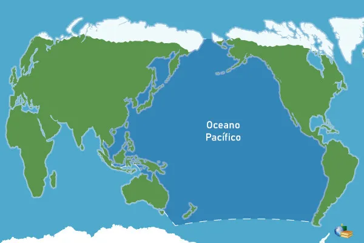

Oceano Pacífico
Extensão
O Oceano Pacífico é o maior oceano da Terra, situado entre a América, a leste, a Ásia e a Austrália, a oeste, e a Antártida, ao sul. Com 180 milhões de km² de área superficial, o Pacífico cobre quase um terço da superfície do planeta e corresponde a quase metade da superfície e do volume dos oceanos. Movendo-se um globo terrestre de forma adequada é possível visualizar-se um hemisfério inteiro do planeta coberto apenas por água, ficando todos os continentes no hemisfério oposto, ocultos à visão em tal posição. Em sua essência — excluída pequena área associada ao oceano Antártico — trata-se basicamente do oceano Pacífico, cujas águas ainda avançam sobre o hemisfério não visível. Em vista da teoria das placas tectônicas e da deriva continental, sua origem remonta ao oceano único que cercava a Pangeia em tempos primitivos, o Pantalassa.
Tem 707,5 km de fossas, e 87,8% de sua área apresenta profundidades superiores a 3 000 m; é o oceano com maior profundidade média (4 282 m) e onde se localizam as maiores fossas submarinas (fossa das Marianas, com 11 034 m).
Sua forma grosseiramente circular é delimitada por margens continentais activas (que correspondem ao círculo de fogo do Pacífico) sob as quais se afunda uma crusta oceânica em rápida expansão. Em suas águas foi registrada a maior temperatura em um oceano: 40,4 °C, a uma profundidade de 2 000 m, a cerca de 480 km ao oeste da costa estadunidense.
Descoberto pelos europeus em 1513 (Vasco Núñez de Balboa), embora desde 1511 que os portugueses navegassem regularmente no mar meridional da China, o qual pertence ao oceano Pacífico, chegando à Tailândia em 1511 e à China em junho de 1513, com Jorge Alvares, portanto antes de Balboa avistar aquele oceano. Transposto pela primeira vez em 1520 (Fernão de Magalhães), o Pacífico tem assistido a um crescimento de sua importância como via de ligação entre algumas das regiões de maior dinamismo econômico da atualidade (Extremo Oriente) e costa ocidental da América do Norte.
Fenômemos
El Niño
É um fenômeno oceânico-atmosférico caracterizado por um aquecimento anormal das águas superficiais no oceano Pacífico Tropical. Altera o clima regional e global, mudando os padrões de vento a nível mundial, afetando assim, os regimes de chuva em regiões tropicais e de latitudes médias.
La Niña
La Niña (“a menina” em espanhol) é um fenômeno oceânico-atmosférico que ocorre nas águas do oceano Pacífico (equatorial, central e oriental). A principal característica deste fenômeno é o resfriamento (em média de 2 a 3 °C) fora do normal das águas superficiais nestas regiões do oceano Pacífico.
O fenômeno La Niña não ocorre todos os anos e nem da mesma forma. Sua frequência é de 2 a 7 anos, com duração aproximada de 9 a 12 meses (há casos que pode durar até 2 anos). O La Niña afeta o comportamento climático no continente americano e outras regiões do planeta.
Efeitos do La Niña no clima mundial
Entre os meses de dezembro a fevereiro
- Aumento das chuvas na região nordeste do Brasil;
- Temperaturas abaixo do normal para o verão, na região sudeste do Brasil;
- Aumento do frio na costa oeste dos Estados Unidos;
- Aumento das chuvas na costa leste da Ásia;
- Aumento do frio no Japão.
Entre os meses de junho a agosto
- Inverno seco na região sul e sudeste do Brasil;
- Aumento do frio na costa oeste da América do Sul;
- Frio e chuvas na região do Caribe (América Central);
- Aumento das temperaturas médias na região leste da Austrália;
- Aumento das temperaturas e chuvas na região leste da Ásia.
Morfoestrutura do fundo oceânico
Flanqueado por cadeias montanhosas recentes, com intensa atividade vulcânica, o Pacífico é percorrido por um vasto sistema de dorsais.
A dorsal Sudeste-Pacífica constitui um prolongamento, através da dorsal Pacífico-Antártica, das dorsais do oceano Índico (dorsal Antártico-Australiana). Em sua porção setentrional atinge as latitudes do litoral mexicano, desaparecendo ao penetrar no golfo da Califórnia. Trata-se de uma dorsal em rápida expansão (entre 8,8 e 16,1 cm por ano), sem fossa axial. As zonas de fraturas que a segmentam são numerosas, com deslocamento pronunciado. Essa dorsal emerge na latitude da ilha de Páscoa, unindo-se à dorsal do Chile, que se liga à costa meridional da América, e na latitude das ilhas Galápagos, unindo-se à dorsal de Cocos ou das Galápagos. Essas dorsais dividem o Pacífico em três conjuntos.
Os fundos oceânicos situados a leste da dorsal Sudeste-Pacífica pertencem a placa litosférica da Antártida (que corresponde à bacia Pacífico-Antártica e à planície abissal de Bellingshausen), à placa de Nazca (bacias Peruana e Chilena, separadas pela dorsal de Nazca) e à placa de Cocos (limitada pela dorsal de Cocos).
Todo o imenso conjunto de fundos oceânicos situados a oeste da dorsal Sudeste-Pacífica é sustentado pela placa litosférica Pacífica, que a oeste América do Norte apresenta grandes zonas de fraturas, com relevos monumentais, alinhados por milhares de quilômetros ao longo de antigas falhas de transformação.
Mais a oeste, o centro do oceano Pacífico é entrecortado por cadeias submarinas e grandes edifícios vulcânicos, ora emergindo em forma de ilhas (Havaí, Marquesas, Marshall, Carolinas), frequentemente coroadas por formações coralíneas (atóis). As bacias oceânicas que as rodeiam (Médio-Pacífica, Melanésia, Nordeste, Noroeste) apresentam uma delgada cobertura sedimentar sobre a crosta basáltica.
A presença das fossas oceânicas periféricas, ao longo dos arcos insulares (Aleutas, Kurilas, Japão, Marianas, Filipinas, Salomão, Tonga, Kermadec) e da costa ocidental da América (Chile, Peru, América Central) explica-se por corresponderem a zonas de subducção da crosta oceânica, em que esta mergulha sob as placas litosféricas Americana, a leste, e Eurasiática e Indo-Australiana, a oeste. São áreas de intensa atividade sísmica e vulcânica, sujeitas à ocorrência de maremotos.
Continentes e Países Banhados
América
- Canadá
- Chile
- Colômbia
- Costa Rica
- El Salvador
- Equador
- Estados Unidos
- Guatemala
- Honduras
- México
- Nicarágua
- Panamá
- Peru
Oceania
- Austrália
- Estados Federados da Micronésia
- Fiji
- Kiribati
- Ilhas Marshall
- Nauru
- Nova Zelândia
- Palau
- Papua-Nova Guiné
- Ilhas Salomão
- Samoa
- Tonga
- Tuvalu
- Vanuatu
Outros
- Guam
- Hong Kong
- Ilha de Páscoa
- Ilha Norfolk
- Ilhas do Mar de Coral
- Ilhas Cook
- Ilhas Menores Distantes dos Estados Unidos
- Macau
- Marianas Setentrionais
- Nova Caledônia
- Niue
- Pitcairn
- Polinésia Francesa
- Samoa Americana
- Wallis e Futuna
- China
- Timor-Leste